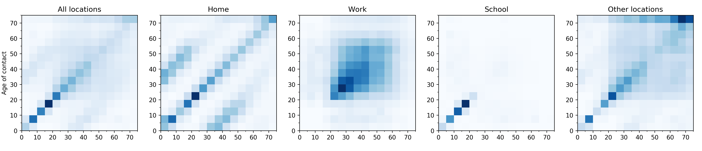

Public Data Sources¶
The following data is used in this project:
NHS/UK Government
NHS England reports daily number of deaths with age group in 20-years bands happening in hospitals; data is available from the 1st of March.
supporting material of the prime minister daily press conference provide daily number of hospitalized people with COVID-19 related diseases. Data is available from the 18th of March.
ONS data on UK population, mid-2018 estimate (most recent available); this reports details on age distribution of UK population, besides many more information (for instance geographical distribution).
Contact matrix
Klepac et al. (2020) gives contact matrices prior to lockdown as obtained from the BBC Pandemic project; in the latter they also provide separate contact matrices according to the contact being physical or conversational and to weekday/weekend. We use however the aggregated contact matrix over these two stratifications, as introducing them in the model would require tuning additional parameters. Moreover, the above contact matrices miss information relative to the contacts of kids younger than 12 years old; as discussed in the above paper, we use the information from the POLYMOD study in order to fill the missing data for those age groups. Also, the age groups considered in the BBC study are finer (5-years bands) than the ones we consider in the present work; we therefore aggregate the data to make the contact matrices suitable to our needs, by taking into account England population size in each of the 5-years bands.

{kind=link}
As the NHS governement dataset consider 20-year bands, we aggregated the above contact matrices in order to match that. Please check our Epidemic model to know more about how the contact matrix is used for our modeling of transmission dynamics.
Google mobility data
In order to understand the impact of the restrictive measures implemented in the UK (whose timeline is reported here), we combined declarations from government officials (e.g. schools closure) and the change in mobility of the UK population reported by their Android devices. Please check our Epidemic model to know more about how the mobility data is used in our model to reflect the effects of the lockdown.